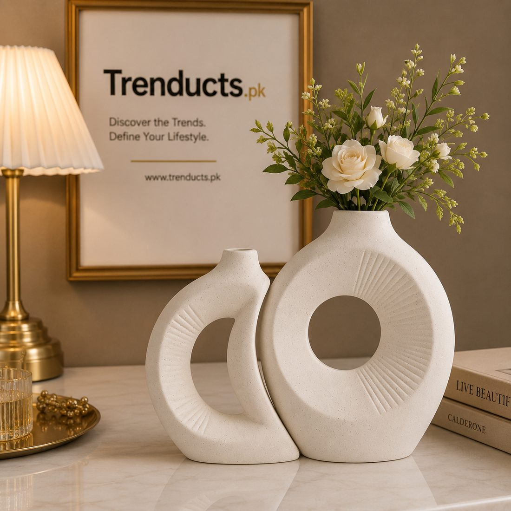
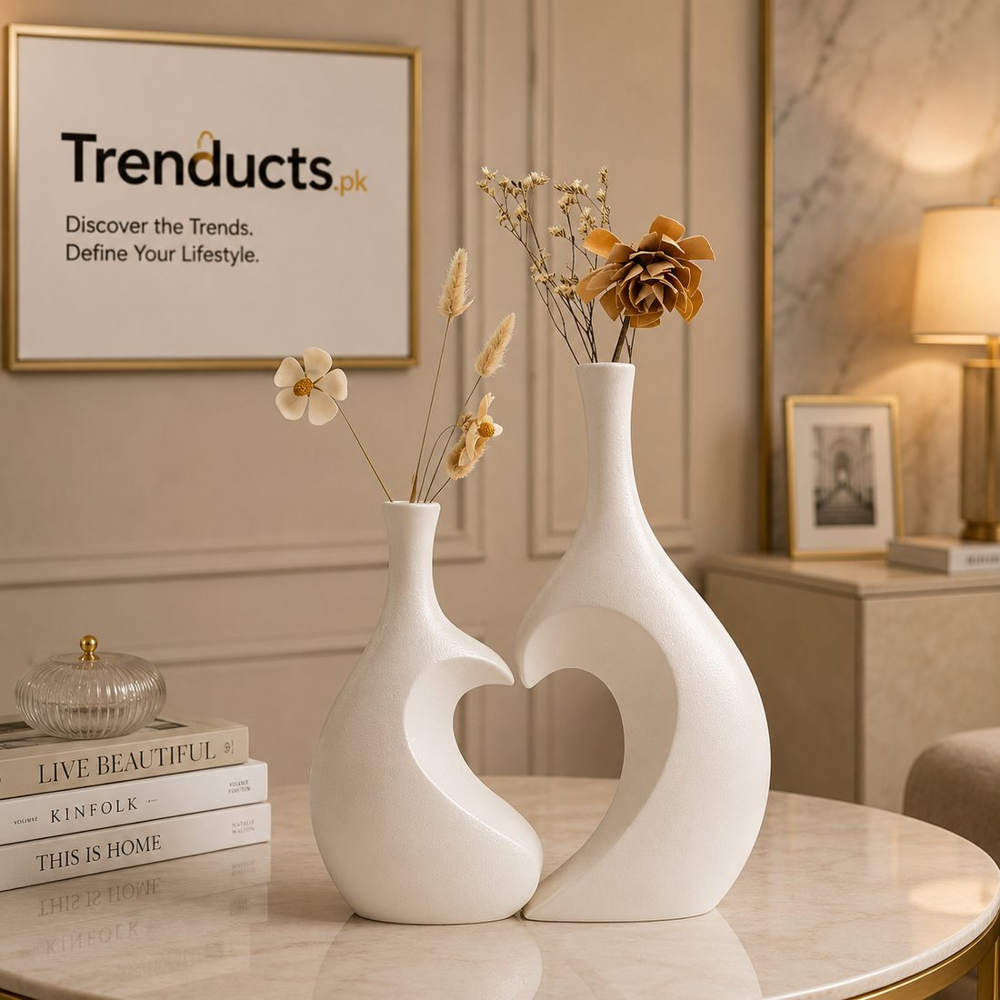

In Pakistan, a wedding is not a single day. Weeks before the baraat, the house fills with relatives, the dholki nights begin, and the home becomes a gathering place for singing, dancing and planning. Many families also hold the mayun or a small mehndi at home. Neighbours know a wedding is coming when lights go up on the house and the entrance is decorated.
The entrance is the first thing guests see, and it sets the mood for every function at home. This guide shares practical ways to decorate it with vases, flowers and lights, without overspending.
Plan around the functions
Think about which functions will happen at home and how long the decor needs to last. If dholkis run for two weeks, choose durable decor such as artificial flowers, ceramic vases and LED lights. Fresh flowers can be added for the main mehndi or mayun night. Planning this way avoids wasting money on fresh arrangements that wilt in days.
Lights set the scene
Lights are the most recognisable sign of a wedding house in Pakistan. Strings of fairy lights cascading down the front wall, wrapped around the gate and along the boundary wall create an instant festive look. Warm white or golden lights look elegant; colourful lights feel playful. Hire an electrician for exterior lighting to ensure safe wiring, especially if rain is possible.

Vases at the doorway
Vases are a simple way to make the entrance look special. Place a pair of tall vases on either side of the main door, filled with artificial or fresh flowers. Ceramic vase sets in modern shapes suit contemporary homes, while brass or glass vases suit traditional settings. A vase that doubles as an LED lamp adds a soft glow in the evening, which looks magical as guests arrive. To see a variety of shapes and finishes, visit https://www.trenducts.pk/collections/vases.
Flowers: real and artificial
Fresh marigolds (genda), roses and jasmine (motia) are traditional and fragrant. Genda garlands hung across the doorway are a classic wedding sight, and rose petals are used to welcome the bride and groom. For longer-lasting decor, high-quality artificial flowers look realistic and can be reused for future events. A mix of both, with fresh flowers near the door and artificial ones in vases, balances beauty and budget.
Colours that match the functions
Many families choose colours for each function: yellow and green for mayun, orange and pink for mehndi, and white or gold for the nikkah. Use cushions, drapes, dupattas and flower colours to switch the theme without changing the main decor. Keep vases and lights neutral so they work for all events.

The inside entrance area
Inside the door, keep the space clear for the flow of guests. Add a small table with a vase of flowers, a bowl of mithai or dry fruit for arrivals, and a mirror for last-minute touch-ups. Place shoe racks discreetly if guests remove shoes. Keep a mat at the door to protect floors during the many comings and goings.
Budget tips
- Reuse decor from previous weddings or borrow from relatives
- Buy durable pieces like vases and lights that you can use for Eid and future events
- Use fresh flowers only for the key nights
- DIY simple decorations with children and cousins, which also adds to the fun
After the wedding
When the wedding is over, store lights carefully wound on cardboard to prevent tangles. Wash and wrap vases in newspaper. Keep the best artificial arrangements for Eid or for display in the drawing room. Many vases will find a permanent place in your home decor.
Final thoughts
A beautifully decorated entrance makes guests feel welcome and adds to the joy of a family wedding. Plan around the functions, use lights generously but safely, frame the door with vases and flowers, and choose reusable pieces. Long after the guests have gone, those vases will remind you of the happy days when the whole family gathered at home.